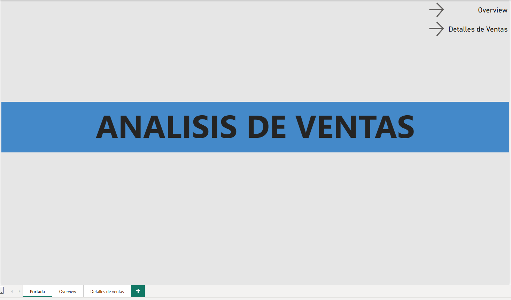
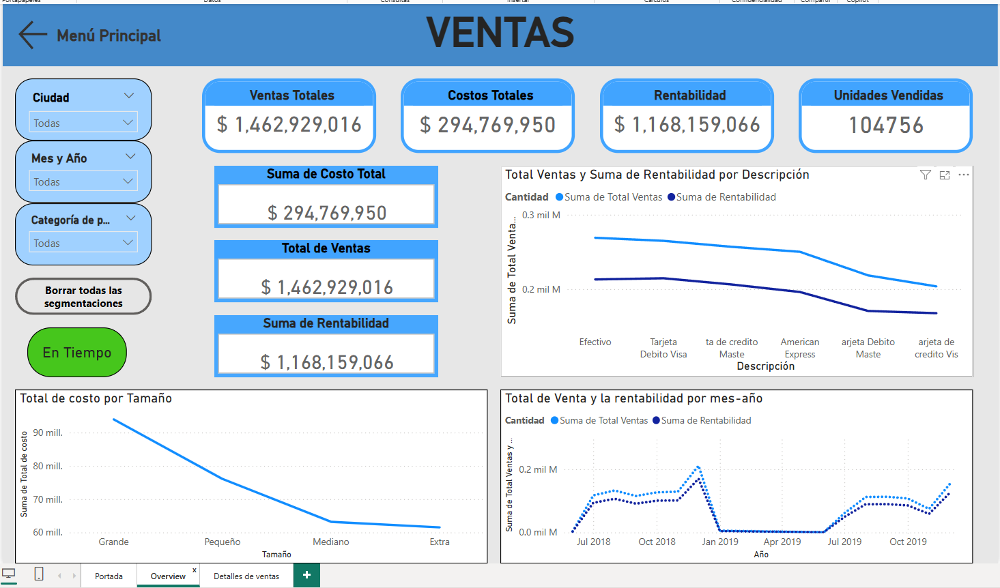
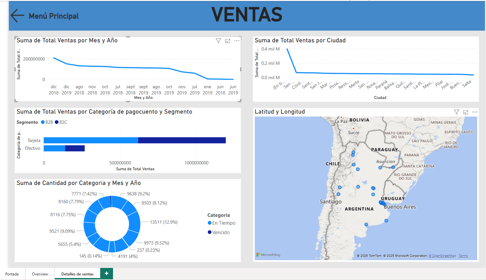

Especialista en Power BI y SQL
Hola, soy Daniel Brito, analista en Business Intelligence con experiencia freelance para IC-Consulting, participando en proyectos del sector metalúrgico. Tengo conocimientos en Power BI, SQL, Python y C++.



📧 britobriandaniel@gmail.com
📞 +54 9 3814090655